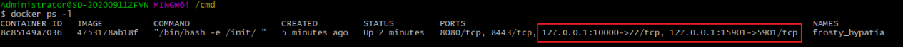
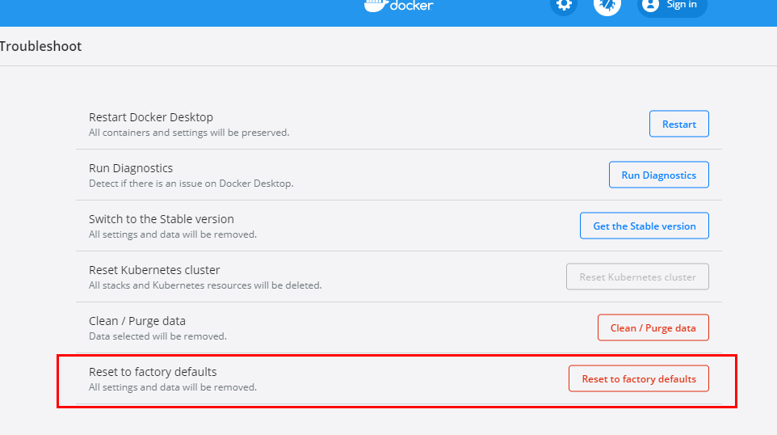
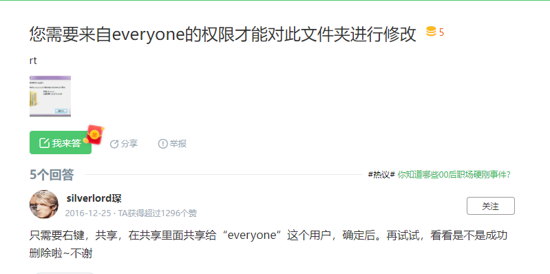
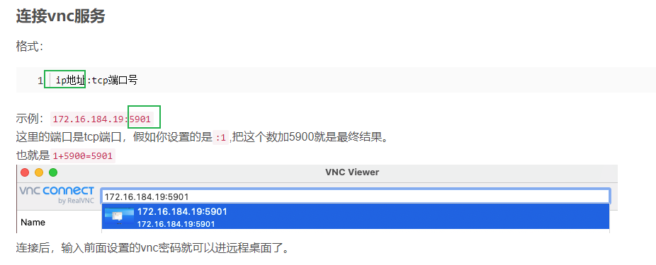

1. 目录
[TOC]
2. docker
官方文档是学习一门新技术的灯塔
官方用户手册
https://docs.docker.com/docker-for-windows/#file-sharing
2.1. docker账号：
ID chen85 1519........
2.2. 目前使用的版本
2.2.1. images版本
每个版本增加什么功能！！！！！
2.2.2. docker版本
原始安装版本以及更新后的版本：

docker version
2021年10月：
2022年11月：

2.3. docker安装配置
2.3.1. Docker Desktop 安装
分为WSL2方式和 Hyper-v方式
注意：install required windows components for WSL 2 不要勾选

原因在于：上面勾选了WSL 2, 后面 setting中配置 resources只能用 .wslconfig 文件来配置了
1、不勾选 WSL 2 --->使用的是Hyper-V ---> 界面配置：

2、勾选 ---> 使用的是WSL 2 ---> .wslconfig 文件配置
2.3.2. 安装后，修改docker的镜像目录
跟版本有关！！！！！！！

其他版本可能可以用：
mklink /J "C:\Users\Public\Documents\Hyper-V\Virtual Hard Disks" E:\docker\Hyper-V
docker的配置文章：
https://www.it610.com/article/1290832596699258880.htm
https://www.runoob.com/docker/docker-mirror-acceleration.html
https://blog.csdn.net/whatday/article/details/86770609
https://www.cnblogs.com/brock0624/p/9792203.html
2.3.3. 源的配置---> 可选

{
"builder": {
"gc": {
"defaultKeepStorage": "20GB",
"enabled": true
}
},
"registry-mirrors": [
"https://registry.docker-cn.com",
"http://hub-mirror.c.163.com",
"https://docker.mirrors.ustc.edu.cn"
],
"experimental": true,
"features": {
"buildkit": true
}
}
2.4. 教程链接
https://yeasy.gitbook.io/docker_practice/image/build docker入门到实践
https://docs.docker.com/engine/reference/commandline/image_build/ 官方文档，包括所有命令参数 https://docs.docker.com/desktop/
2.5. docker 代理配置
2.5.1. 法一： Ubuntu内部设置代理
（与宿主win无关）
docker run ^
-p 127.0.0.1:10000:22 ^
-p 127.0.0.1:15901:5901 ^
--cap-add SYS_ADMIN --device /dev/fuse ^
-t -i -v I:\dockerSharedFiles:/home/chengang/workingSpace/local ^
-v H:\dockerSharedFiles_Gpan\dockerSharedFiles_Gpan:/home/chengang/workingSpace/local2 %imagesId% /bin/bash
// --cap-add SYS_ADMIN --device /dev/fuse 作用：
qv2ray会使用到fuse，见
https://stackoverflow.com/questions/48402218/fuse-inside-docker
https://stackoverflow.com/questions/51263555/riofs-fuse-device-not-found
教程：TODO: 完善自己的
https://bwfish.xyz/archives/linux%E4%B8%AD%E5%8F%AF%E7%94%A8%E7%9A%84%E6%9C%BA%E5%9C%BA%E5%B7%A5%E5%85%B7qv2ray.
https://www.zsxcool.com/7137.html
方法一步骤
配置核心执行文件

订阅配置


最终结果：


注意：方法一的关键点：ping的时间在100ms左右。否则，打开Google非常卡，有时候打不开；Clion用不了
遇到的问题：
脚本执行后，卡在这个位置

解决办法：新开一个terminal，
再次执行：
sudo ./Qv2ray-v2.7.0-linux-x64.AppImage
# if clinet UI does apper, try sudo ./Qv2ray-v2.7.0-linux-x64.AppImage again
有时候遇到界面没有跳出来，需要手动点开：
基于方法一，给Ubuntu配置系统全局代理---一个终端(临时)
todo： 是不是clion和浏览器就不用配置了？-----> 测试浏览器不是
export ALL_PROXY='socks5://127.0.0.1:1089'
//验证
curl http://www.baidu.com
curl http://www.google.com
curl https://www.google.com
取消设置的代理
unset ALL_PROXY

基于方法一，给Ubuntu配置系统全局代理---持久化
# 配置代理 编辑vi ~/.bashrc，增加代理配置 ----> 持久化
export http_proxy="127.0.0.1:8889"
export https_proxy="127.0.0.1:8889"
或
export ALL_PROXY='socks5://127.0.0.1:1089'
注意： 此处在bashrc中配置了HTTP代理，但它可能会影响那些需要访问本地网络的bash命令行工具的使用。譬如：kubernetes集群客户端工具kubectl。在开启代理的情况下，kubectl无法顺利连接到APIServer，需要unset http_proxy和https_proxy两个环境变量，才可恢复正常。
基于方法一，Ubuntu下浏览器链接代理


基于方法一，Ubuntu下clion链接代理

2.5.2. 法二： 宿主win给 Ubuntu共享代理网络
----> TODO: 不知道怎么用的
2.6. docker命令
2.6.1. docker启动：
docker images -a
暂时不用： docker run -t -i eca1757c6d5c /bin/bash
2.6.2. 挂载磁盘
主机F:\shareFiles挂载到/home/chen目录下
docker run -t -i -v F:\shareFiles:/home/chen/workingSpace/local f2bab1877e15 /bin/bash
前提：

docker run -p 10000:22 -t -i -v G:\dockerSharedFiles:/home/chen/workingSpace/local -v H:\dockerSharedFiles_Gpan\dockerSharedFiles_Gpan:/home/chen/workingSpace/local2 403c641a0264 /bin/bash ----》目前：10000需要改成20000
注意：需设置

2.6.3. ssh链接
关于ssh链接：
https://blog.csdn.net/qq_37955980/article/details/83044482 docker学习之ssh连接
主机端口：10000 <-----上面命令导致的
使用MobaXterm远程连接步骤：
（1）进入容器并重新开启ssh ----> 每次都需要
[root@68e7598797d7 /] # /usr/sbin/sshd -D &

（2）使用MobaXterm远程连接
通过xshell或者其他连接工具进行远程连接了，记住，ip是宿主机的IP地址，端口号宿主机上的端口，=即上面端口映射命令中的10000 ！
注意:主机ip很容易变动！！！！

MobaXterm设置：框内是主机的ip，即是IPV4
2.6.4. 账号
user：cheng
密码：151937Cgkent.
root账号密码：151937Cgkent.
注意：最初cmd窗口就是root

2.6.5. docker commit（禁止使用）
docker退出
docker ps -l

docker commit 7a96e91 newName: v2

Ubuntu镜像
规定提交的格式为： 1、 docker tag 1be049d70e93 chen85/ubuntu16.04_aosp1000_r17:v1 ---》这个是docker hub push识别的格式 2、或：docker commit 7a96e91 chen/ubuntu16.04_aosp1000_r17:v1
禁止原因：
docker commit 制作镜像，以及后期修改的话，每一次修改都会让镜像更加臃肿一次，所删除的上一层的东西并不会丢失，会一直如影随形的跟着这个镜像，即使根本无法访问到。这会让镜像更加臃肿。
2.6.6. Dockerfile 定制镜像
docker build使用 Dockerfile 定制镜像
---》防止image臃肿
#H:\docker_anzhuang2\Dockerfile
FROM chen85/ubuntu16.04_aosp1000_r17:v1
RUN echo '这是一个本地构建的nginx镜像' > /home/chen/index.html

在 Dockerfile 文件所在目录执行：
docker build -t chen85/ubuntu16.04_aosp1000_r17:v2 .
关于Dockerfile详细说明：
概念：

技巧：用一个RUN命令替代多个 ---> 产生一个层
FROM debian:stretch
RUN apt-get update
RUN apt-get install -y gcc libc6-dev make wget
RUN wget -O redis.tar.gz "http://download.redis.io/releases/redis-5.0.3.tar.gz"
RUN mkdir -p /usr/src/redis
RUN tar -xzf redis.tar.gz -C /usr/src/redis --strip-components=1
RUN make -C /usr/src/redis
RUN make -C /usr/src/redis install
正确：
FROM debian:stretch
RUN set -x; buildDeps='gcc libc6-dev make wget' \
&& apt-get update \
&& apt-get install -y $buildDeps \
&& wget -O redis.tar.gz "http://download.redis.io/releases/redis-5.0.3.tar.gz" \
&& mkdir -p /usr/src/redis \
&& tar -xzf redis.tar.gz -C /usr/src/redis --strip-components=1 \
&& make -C /usr/src/redis \
&& make -C /usr/src/redis install \
&& rm -rf /var/lib/apt/lists/* \
&& rm redis.tar.gz \
&& rm -r /usr/src/redis \
&& apt-get purge -y --auto-remove $buildDeps
到这一组命令的最后添加了清理工作的命令，清理了所有下载、展开的文件，并且还清理了apt 缓存文件
2.6.7. 合并镜像层 squash
--squash --> Squash newly built layers into a single new layer
优点：1、把Image多层变成一层，合并多个commit，有效减小体积！
docker build --squash -t chen85/ubuntu16.04_aosp1000_r17:v4 .
---》默认使用了Dockerfile，需要修改

2、docker history 076f7dad0851 信息并没有减
查看层数：

2.6.8. docker puase
docker pause/unpause <container-id>
不用时，docker puase ---》 sleep所有进程
------》极大的降低CPU使用率
2.6.9. Docker 容器连接的优化：
原始：
docker run ^
-p 10000:22 ^
-p 15901:5901 ^
-t -i -v G:\dockerSharedFiles:/home/chengang/workingSpace/local ^
-v H:\dockerSharedFiles_Gpan\dockerSharedFiles_Gpan:/home/chengang/workingSpace/local2 4753178ab18f /bin/bash
MobaXterm链接时的ip使用主机的：

对应运行的

优化：
docker run ^
-p 127.0.0.1:10000:22 ^
-p 127.0.0.1:15901:5901 ^
-t -i -v G:\dockerSharedFiles:/home/chengang/workingSpace/local ^
-v H:\dockerSharedFiles_Gpan\dockerSharedFiles_Gpan:/home/chengang/workingSpace/local2 4753178ab18f /bin/bash
MobaXterm链接时的ip使用主机的127.0.0.1，固定！！！！
相当于有一层代理，具体使用时，不用管具体ip是多少
对应运行的

2.6.10. 远端
docker账号登录：docker login
chen85
docker push
docker push tag 1be049d70e93 chen85/ubuntu16.04_aosp1000_r17:v1
见：https://www.cnblogs.com/kevingrace/p/9599988.html 通过容器提交镜像（docker commit）以及推送镜像（docker push）笔记 下载
2.6.11. docker网站，
类似gitHub
https://hub.docker.com/
2.6.12. 下载别人的镜像
docker pull wangshibo/myubuntu:v1
2.6.13. 镜像保存成jar到本地
https://blog.csdn.net/qq_37797234/article/details/103660748
保存镜像到本地！！！！
docker save ubuntu16.04_0902 -o E:\docker\ubuntu16.04_0902.jar
docker save chengang/ubuntu16.04_aosp1000_r17:vnc_ok -o H:\docker_jarFiles\ubuntu16.04_aosp1000_r17_vnc_20221026.jar
加载本地镜像
C:\Users\xixi>docker load -i F:\VirtualMachine\Docker\ubuntu.tar
2.6.14. docker rmi 删除镜像
方法一：通过imageID： docker rmi ee7cbd482336
删除镜像难以删除的情况： 1、一个ImageID 对应多个 repositories：

删除方法（优）： 注意：不能在cmd下运行
docker rmi chen85/ubuntu16.04_aosp1000_r17:v1
2、被正在运行的容器关联了： container 368027944f2e is using its referenced image

方法：删除所有容器，再删image
docker stop $(docker ps -a -q) #全关
docker rm $(docker ps -a -q) #删除全部容器
docker rmi ubuntu16.04_aosp1000_r17:latest #删除image
2.6.15. 磁盘overlay满了
(1)docker system prune ----> 清除不用的镜像和缓存，慎用！！！
https://www.cnblogs.com/wswang/p/10736726.html

（3)删？？？？
(2)
https://segmentfault.com/q/1010000020545464
https://www.jianshu.com/p/9174914ec07d
2.7. error
2.7.1. docker报错:图标变红 方法1：
cmd报错：open //./pipe/docker_engine: The system cannot find the file specified.
解决方法：
重置配置，，，，再重启电脑！

reset to factory defaults ----> 规定：后面不准用这种方法，会造成setting改变
2.7.2. 启动异常报错--》方法2:
运行docker出现System.InvalidOperationException错误

解决办法：
1.管理员方式运行cmd
2.输入命令：netsh winsock reset

3.重新启动Docker 4.重新switch to Linux Containers 5.成功
技巧，特别注意： 此时，应该所有的image都没有了。尽量不要重新load image，应该把这个文件复制到setting目录下面


移动文件需要everyone权限

2.7.3. 启动异常报错 方法3:（优）
reset to factory defaults仍然报错 ----> 规定：后面不准用这种方法，会造成setting改变
---》技巧：不要重新装docker软件 关闭docker，重启win，删除DockerDesktop.vhdx，启动docker ----》docker会自动生成
优点：不用重新装docker，setting不会变
2.7.4. 启动异常报错 方法4:（极优）
1、备份好的DockerDesktop.vhdx
2、基于方法3，恢复环境
3、copy .vhdx至目录下，重启 ----> 优化了load jar的时间
TODO: 以后备份都用.vhdx？ 而不是jar？
2.8. docker连 主机pc连的安卓设备
1、宿主为windows： https://testerhome.com/topics/8049 https://blog.csdn.net/qq_42693848/article/details/109505849 使用方法
宿主windows侧：起服务
安装 nodejs
推荐使用 nvm 安装： http://events.jianshu.io/p/5db570f53e6a
win10中使用nvm安装nodejs遇到的坑整理------> ==很好的教程==安装 adbkit
$ npm i -g adbkit启动 usb 转 tcp 服务
$ adbkit usb-device-to-tcp -p $port $serial // serial是手机序列号 比如：adbkit usb-device-to-tcp -p 7788 FA6930305260docker侧：连接服务
在docker侧（装有 adb 的机器上）进行设备的连接
假设启动 adbkit 服务的机器 ip 是 10.0.0.1 端口是 15555 ----> ip试了HOST的真实ip，以及
$ adb connect 10.0.0.1:7788
万能方法： 为了方便docker提供了专门的标志表示母机的ip：host.docker.internal 见：https://blog.csdn.net/qq_42693848/article/details/109505849
adb connect host.docker.internal:$port
adb connect host.docker.internal:7788
其他注意事项
adb连接手机默认使用的是5037，母机与容器交互的接口无法在使用该端口，需要选择其他端口。
2.9. docker容器安装图形桌面
VNC远程win： tigervncserver -vncClient
参考： https://blog.csdn.net/lxyoucan/article/details/121679346
视频教程：https://www.bilibili.com/video/BV1mL41177Av
总之，使用：
docker run ^
-p 10000:22 ^
-p 15901:5901 ^
-t -i -v G:\dockerSharedFiles:/home/chen/workingSpace/local ^
-v H:\dockerSharedFiles_Gpan\dockerSharedFiles_Gpan:/home/chen/workingSpace/local2 8ea41f5aa2f9 /bin/bash
:: /usr/sbin/sshd -D &
:: -p 10000:22 用于ssh登录 ---》使用win ip + 10000 ： 192.168.1.4:10000
:: -p 15901:5901 用于VNC界面登录 ---》使用win 的Ethernet adapter ip + 15901: 172.18.28.1:15901
或 127.0.0.1::15901 ----》 永恒不变
注意点：
1、关于vnc链接的ip ： 使用win 的Ethernet adapter ip


登录：


2.9.1. 问题1：VNC连不上的
报错：connection closed 操作方法：
// 1、重启一下服务试试
vncserver -kill :1
vncserver -kill :2
vncserver -kill :3
vncserver -kill :4
vncserver :1 -localhost no -geometry=1920x1080
// 2、如果上述不行，看有没有提示：
Warning: 4fcb1df56031:1 is taken because of /tmp/.X1-lock ----》删掉这个文件
Remove this file if there is no X server 4fcb1df56031:1

2.9.2. 关于VNC 客户端的选择
1、TurboVNC Viewer（优）

可以双屏
全屏切换快捷键 ALT + Enter
2、集成了TurboVNC Viewer的 MobaXterm
有些问题：必须全屏 + stay on TOP 有些快捷键才生效； 复制粘贴 偶现问题

2.10. 剪切板复制 docker与win
https://zhuanlan.zhihu.com/p/518188941 VNC 复制粘贴中文乱码问题及解决方案

结合两个帖子：
vim ~/.vnc/xstartup
#加入：
# win --> docker
vncconfig -nowin &
vncconfig -iconic &
autocutsel -fork&
注意：
1、重启一个vnc服务
2.10.1. 报错与解决办法
vnc: failed to open clipboard https://blog.csdn.net/qq_39590599/article/details/116228624


2.11. 一些环境规定：
docker 命令必须在bash环境下执行，不能用cmd（除了启动的）
2.12. 关于docker网络的几个概念区分：
1、使用的网络类型是bridge，桥接的宿主网络(组成局域网) （1）在容器外使用时： moba连接时，用的127.0.0.1，为啥？ -----> 因为原先用的宿主的ip，宿主ip对于寄生的docker就是127.0.0.1 （2）在容器内使用时： 必须用宿主机的绝对ip，不能是127.0.0.1？-----> 因为在内部，相对ip172是其自己 2、使用--network=host，这样的话使用 -p 参数映射端口就没用了， 即所有端口都是开放和宿主机共享的 （2）在容器内使用时： 能用127.0.0.1 -----> 因为127是自己 ，也是host，共享的端口
代理软件： 本地 关系：AS对win是本地的关系; AS对docker 容器 moba对win是本地的关系
局域网关系： docker内部对win
2.13. 优化
自动保存 DockerDesktop.vhdx 脚本 ：vhdx_backup.bat ---> 不影响docker 容器unbuntu正常工作的，可以白天经常做
自动build、save、load脚本：docker_build_save_load.bat ---> 必须晚上